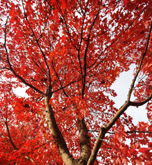

Maple tree

The Maple tree grows to a manageable mature height of roughly 60 feet. This makes it a top choice with both professional landscapers and the average homeowner looking to add color and charm to green spaces.
While its height is less than extraordinary, Maples have a number of noteworthy characteristics, including:
-
Bark: Young Maples have smooth, gray bark which develops deep furrows and long, thick plates as the tree matures. The Red Maple features crimson undertones and irregular scales in its bark as the tree ages.
- Fruit: Most Maples grow small U or V-shaped fruit with parallel wings called samaras. In some parts of the world the fruit bears the nickname: "helicopter."
- Leaves: Maple leaves are typically five-lobed with bright green glossy tops and pale green undersides. The leaves of the Silver Maple feature silvery white undersides. In addition, the leaves of nearly all Maple trees include fine teeth that line their perimeter.
Those serrated edges that look like teeth are a key trait of the Maple specimen, as are the leaves' pointed tips. Maple tree belongs to the genus Acer, which means "sharp" in Latin. The name refers to the iconic points featured on Maple leaves.